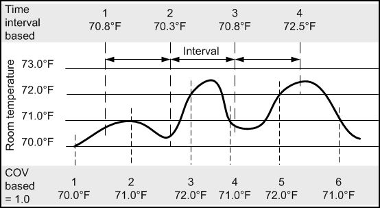

Trends
The Trends application allows you to work with trends that are recurring samples of data.
These data samples can be taken at regular time intervals or whenever there is a change in a value of an object by a prescribed amount.
Some examples of data samples in trending include the following:
- Collecting the room temperature after every 10 minutes.
- Sensitivity reading of smoke detectors once per week.
Trends are of two types, online and offline.
- Online trends record real-time values from your plant and display them graphically in a Trend View.
- Offline trend data is used for the longer-term storage and retrieval of historical data for the analysis of entire plants or single processes.
You can add, modify, and delete values of trended properties of trended objects that are logged in online as well as offline trends through the Manual Correction application.
You can use Trend Views in two ways in the management station:
- During operation, trend data recorded in real-time and saved to the trend database (management station is online).
- Trend data is recorded in the automation station (management station is offline) and periodically loaded to the management station trend database.
You can display the trend data in the Trend Viewer any time, even if the management station is not connected to the site (no real-time data available).
The precision for a 64 bit value is supported till 2E49 (15 digits). GmsBitString64 data type is not supported.
The Trends application is covered by a license. In order to access the Trends application, you must ensure that the Trends license is available in your system.
Record Trend Data
You can record trend data using either of the following methods:
- Change-of-value (COV)
The change-of-value method allows you to record new data when the data point value changes.
No value is recorded or transmitted if the value does not change over an extended period of time.
Database acquisition of several data points in a Trend View is asynchronous. - Interval-based
The interval-based method is applicable to record offline trend data. It allows you to record current data as soon as the timestamp is reached.
The data values are recorded without impacting a defined COV property. - Triggered
Refers to the BACnet reference names of the selected trigger from reaction, scheduler or the BACnet reference.

Trends in Distributed System
When working with trends in a distributed environment, you must understand the details of the following applicable conditions:
- System Name column - A column named System Name has been added as an additional column to the Trends application.
It displays the name of the system to which the source object belongs.
You can select this column by right-clicking the column header on the legend and selecting System Name from the menu options. - A Trend log multiple object cannot have objects from multiple systems.
- A Trend log or Trend log multiple object can be created only on that system where the selected trended object belongs.
- You can create a Trend View Definition with objects from multiple systems.
This section provides background information on Trends of Desigo CC. For related procedures, see the step-by-step section.